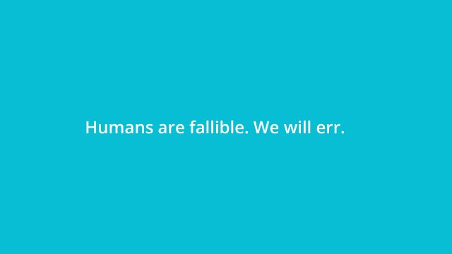
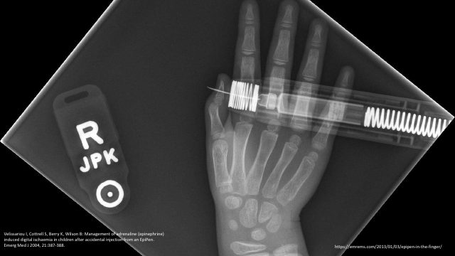
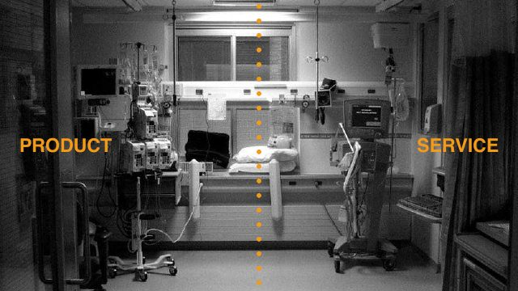

The cold open works
The audience makes an attribution, sees the designed card, and revises its judgment. Preserve that experience.
Multi-agent adversarial review · July 2026
The deck still knows how to command a room. Its refresh is chiefly editorial: make use error, not user error the unmistakable spine, and let every story widen the frame from person to system.
Lecture reviewed as a live two-hour performance for 44–45 graduate health professionals.
Panel verdict
The Jobs/TED DNA is real: suspense, object stories, humour, hard cuts, and presenter-dependent meaning. The weakness is accretion. Human error and safety, product design, and a service-design portfolio now compete for the same opening lecture.
The refresh should subtract, sequence, and re-source before it reskins. A more polished version of the same inventory would still blur the learner transformation.

The audience makes an attribution, sees the designed card, and revises its judgment. Preserve that experience.

Pill bottles, pumps, and the EpiPen make design tangible at Jobs-like scale.

The best conceptual slides show a relationship instantly and leave you room to perform.
Hard critique
Each would work alone. Together they flatten the main idea.
| Before | After | Why |
|---|---|---|
| “Use error, not user error” is absent. | Turn `USER ERROR` into `USE ERROR`, then reveal the surrounding system. | The course's protected vocabulary must be seen as well as spoken. |
| Fallibility is presented as a conclusion. | Pair it immediately with anticipation, detection, and recovery. | Fallibility is a design requirement, not fatalism. |
| SEIPS, Human-Tech Ladder, empathy, paradoxes, design thinking, service design, and HIE all compete. | Use SEIPS/Human-Tech Ladder to diagnose and HIE to act. | Two reusable lenses transfer better than seven adjacent concepts. |
| Dense paper pages, browser screenshots, and workflow maps are projected intact. | Reconstruct one relevant detail and move nuance into notes. | A 45-person room cannot inspect and listen simultaneously. |
| Healthcare is framed as ad hoc versus regulated industries. | Compare standardization, variability, feedback, regulatory reach, and learning capacity. | The binary is contestable and can distract experienced clinicians. |
| Late sequences each open a new emotional narrative. | Choose one mapped capstone; move the others to later lectures or appendix. | Medly, refugee response, and COVID response currently ask to be separate acts. |
| White text sits on bright cyan. | Use ink on bright cyan, or white on dark teal. | The current pairing is about 2.23:1 contrast and is weak from the back of the room. |
Your 2012 TEDx talk
For this lecture, replace the product as hero with the work system as causal protagonist.
Recommended narrative spine
Design it three ways
One contemporary event recurs through the whole lecture. The first view shows only the apparently obvious action. Each return widens the system boundary, tests mitigations, and closes with redesigned conditions.
Best for: ensuring the no-blame systems thesis survives two hours of rich material.
Insulin pump, EHR, AED, pill bottle, EpiPen, PPE. Each object follows the same five beats: what was seen, what was attempted, what the design assumed, why the action was predictable, and what stronger design changes.
Best for: the cleanest aesthetic refresh and most recognizable object theatre.
Nine groups of about five investigate three cases. Each commits to an apparent cause, then revises as system layers appear. The final slide records how the room's explanation changed.
Best for: using the experience of this graduate cohort as live course material.
Rendered redesign studies
These are deliberately different slide beats—axiom, terminology, case, evidence, and reflection—held together by one typographic and colour system.
Contemporary content bank
These are not all additions. They are candidates to replace dated screenshots or collapse longer sequences.
A numeral in a morphine brand name sat beside `1 mg/mL`, contributing to repeated 11-fold dosing errors. The product name was changed after reports.
ISMP Canada sourceRoles, records, e-prescribing, service hours, self-administration, and medication policy intersected during a three-day ED stay.
HSSIB investigationSEIPS exposes staffing, consecutive shifts, rest facilities, workload, reporting, and a culture that treats endurance as professionalism.
HSSIB investigationDevice performance, validation samples, lab methods, labelling, procurement, and clinical interpretation form one sociotechnical system.
FDA proposed recommendationsAcross four hospitals, the same sepsis model produced materially different discrimination, positive predictive value, and alert burden. Workflow and threshold choices determine what the model becomes in practice.
JAMA Network Open studyA database-import failure corrupted automated dispensing data. Frontline detection and emergency preparedness prevented reported harm.
ISMP Canada bulletinTemporary care spaces inherit requirements for monitoring, oxygen, suction, call bells, privacy, infection control, response, and governance.
HSSIB investigationConfiguration, interoperability, procurement, local governance, prompts, and maintenance determine safety—not the software name alone.
HSSIB investigationCompanion documents
The presenter deck should not become the handout. These documents carry the evidence, caveats, and reading alignment.
Recommended next pass